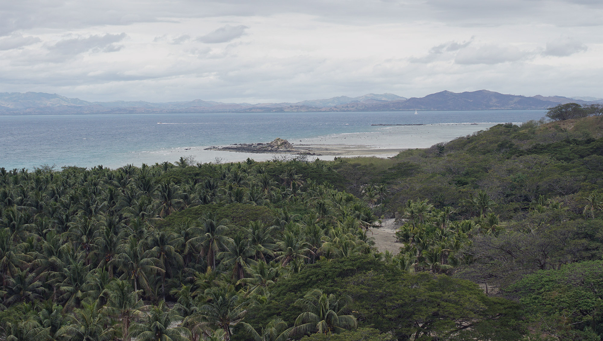
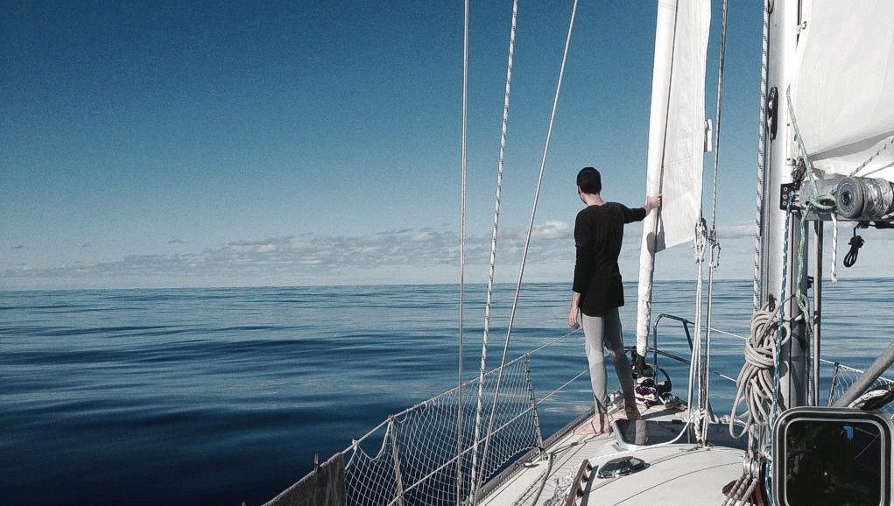
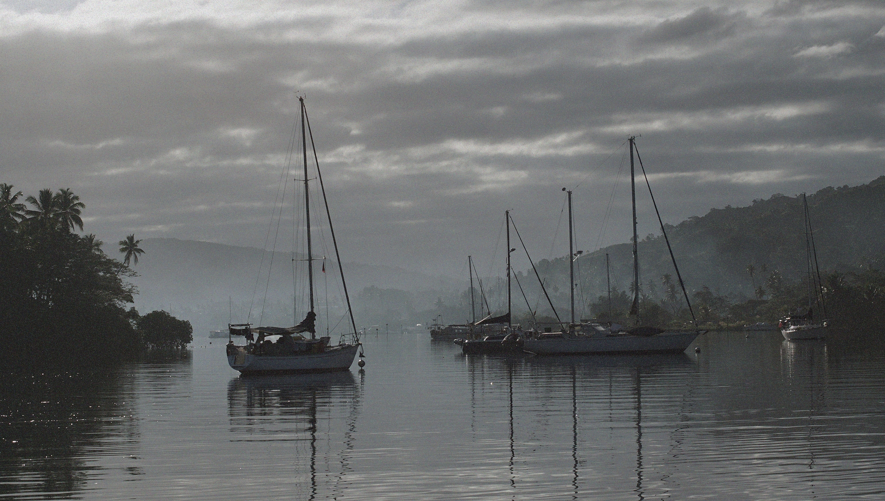
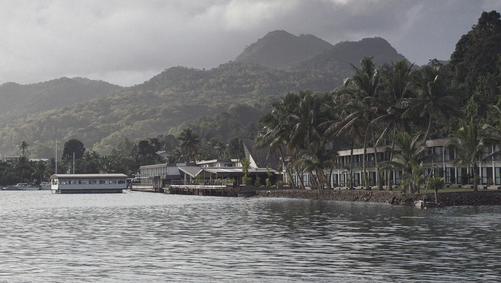
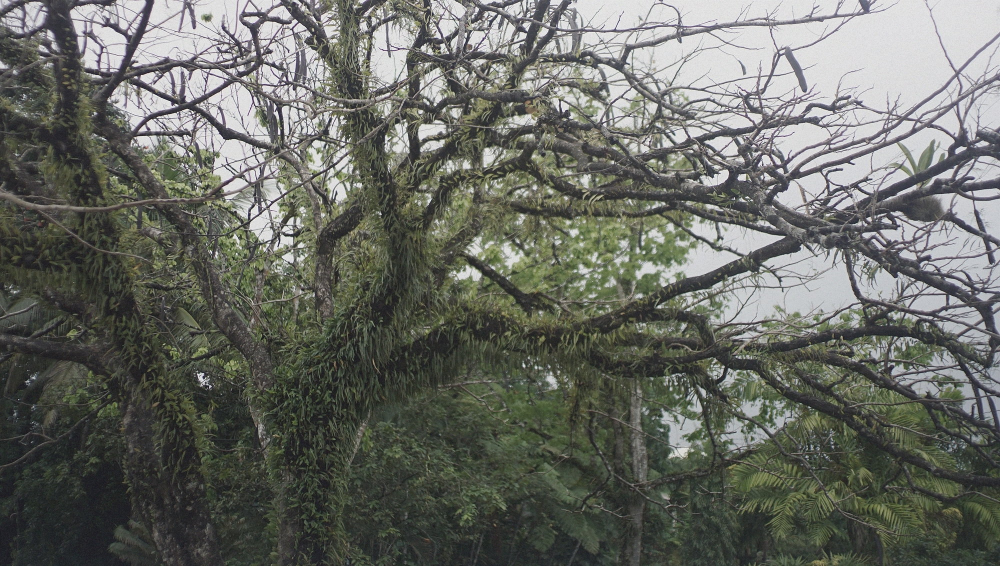

fiji
In late June, we sailed to Fiji and stayed for 4 months. The sail to Savusavu took 15 days from new zealand, it was a slow ride because of contrary winds.
We experienced complete stillness on the ocean, for the first time.
We stayed in Savusavu for a while, comfortably moored in Nakama Creek. We had a fresh food market nearby, plenty of places to walk to, and easy access to kava. We liked eating out at Korean restaurant in town, that is, until we learned it was run by a homophobic doomsday cult. Along with friends, we drove up to Labasa for a visit.
The internet situation in Fiji was very good. Data is cheap and there are cell towers everywhere.
Eventually, we moved down to Makogai, a former leper colony and island without a chief. Then, we hopped over to the tiny paradise island of leleuvia, to wait for a weather window to move to Suva. Near Suva, we found protection in a small bay near Lami, not too far from downtown. We tied to a mooring near shore. At low tide, the water was so shallow that it was easier for kids to swim to the boat. We spent a week in Lami, busy mending iggy. While the dinghy was recovering on deck, a local lent us a hard dinghy so we could get to shore.
Our next stop was Momi Bay, we used it as a stop-over before going to Malolo Lailai. The passage to this island was tricky, and dotted with reefs, it was best done under a high noon sun. We brought our bicycles on land and went around the dirt roads surrounding the island.
Our last stop in Fiji was Vuda Point Marina, where we stocked up for the passage north to the marshall islands. Pino was sandwiched between boats, bow tied to shore with the stern leading to a mooring. Vuda Point Marina was a circular marina, with all of the boats sitting side to side, fender to fender.
Our favorite food there was taro root and passion fruit, we also liked buying fresh turmeric.
Blog posts about our stay in Fiji:
While in Fiji, we worked on orca.
 